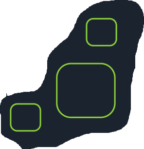
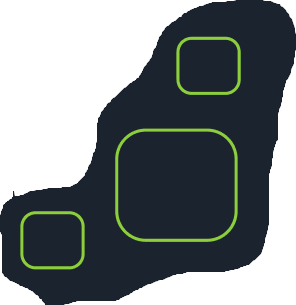

Quem é Felipe?
Felipe é um assistente virtual que tem o potencial de facilitar a sua navegação, esclarecer dúvidas, explicar funcionalidades e guiar estudantes na resolução de pendências! Sua presença promove maior autonomia aos usuários e torna a plataforma mais acessível e intuitiva, especialmente para alunos novatos. Além disso, Felipe também pode auxiliar estudantes veteranos que enfrentam dificuldades.
O que ele faz?
O projeto tem como objetivo o desenvolvimento de um assistente virtual para a comunidade acadêmica do IFRN. O agente, chamado Felipe, será construído com IA generativa (LLMs) da OpenAI, Ollama e Google Gemini, capaz de interagir e orientar discentes e docentes sobre demandas institucionais como SUAP e Portal IFRN.
Como falo com ele?
O contato com Felipe será por meio do WhatsApp. É possível trocar mensagens, áudios e arquivos, atendendo diferentes necessidades. Felipe está disponível 24h por dia, responde simultaneamente a vários usuários e funciona tanto em conversas privadas quanto em grupos.